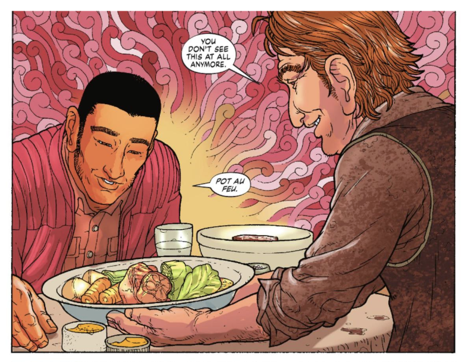
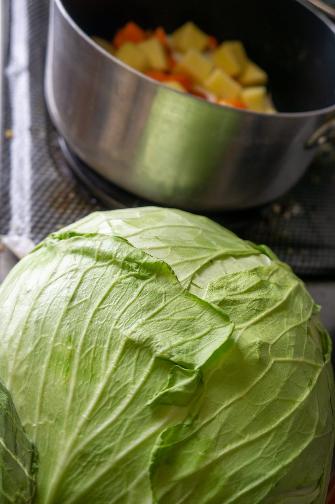
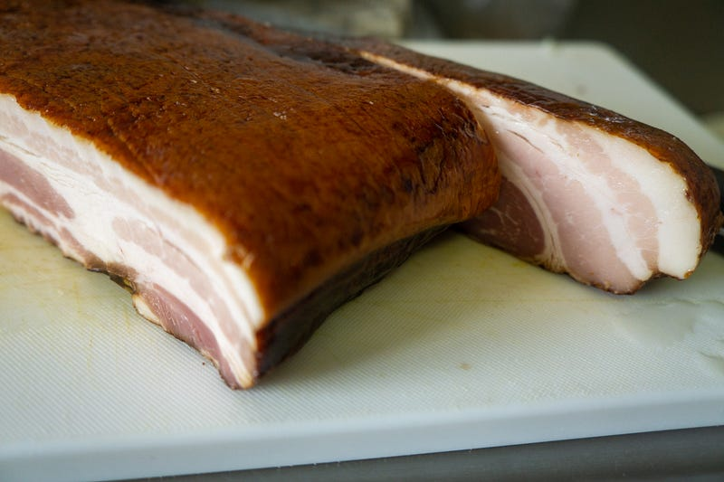
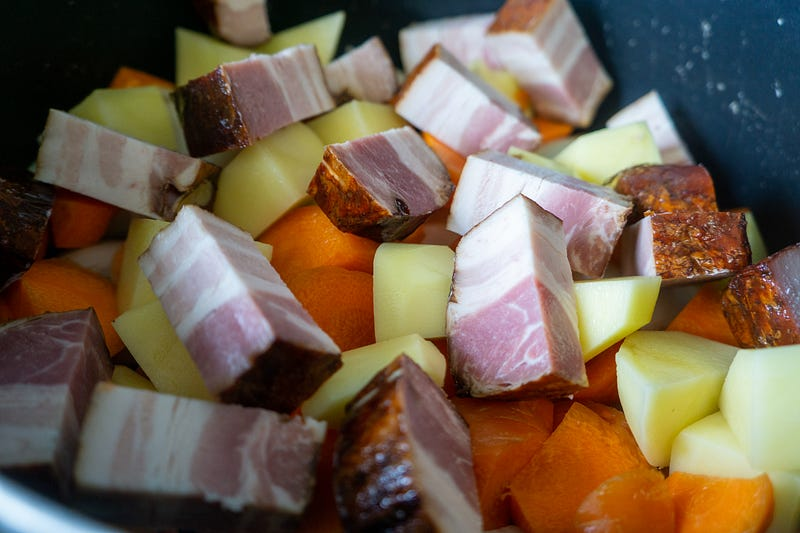
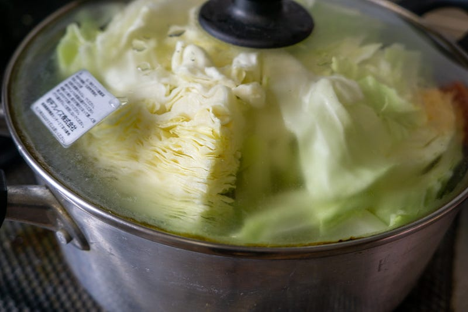
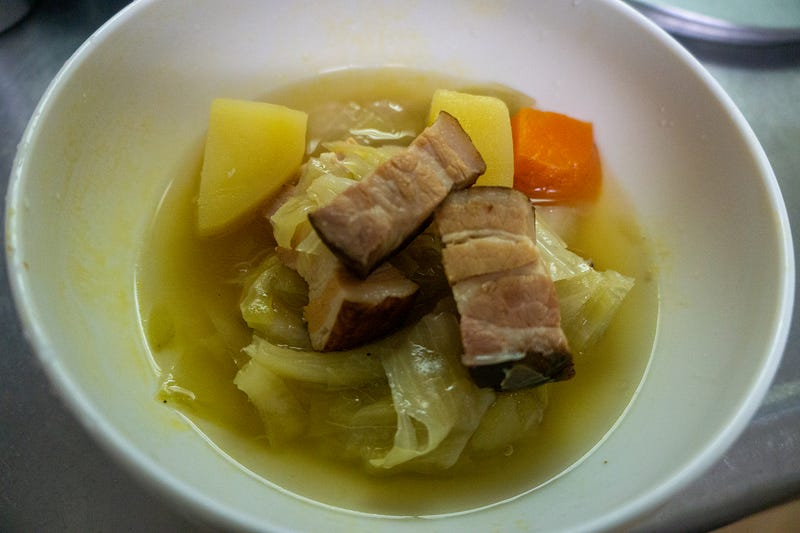

塊ベーコンでポトフ
塊ベーコンでポトフ
少し気温が下がると途端にポトフが恋しくなる。おでんとかも素敵だけど、ポトフは肉と野菜をどちゃっと入れて煮て、味をつけたらおしまいという手軽さが良い。
というわけで、この非常に雑な性格の人間に合うポトフを今回は作っていく。
ちなみに僕のポトフの理想型はこれです。

このGet Jiro!のポトフのようにでかい野菜、コンソメスープ、そしてその上に厚いスライスベーコンがのってる理想なんだけど、まぁうちには子供もいるのでそのあたりは適当にやる。
入れるのは玉ねぎ、人参、ジャガイモ、キャベツ。どれもわりと大きめに切る。入れる順番とかもあまり気にしてない。

さらに今回の具材の主役は前に買った塊ベーコン。これはサイコロステーキみたいな感じにゴロゴロと。

遠目で見るとまるでなにかのケーキみたいですが、肉の塊です。

最初はとりあえず呼び水程度の水を入れて、弱火でコトコト。今回はローリエがあったので、それも入れておいた。

ある程度火が通って水が足りないようだったら追加で水を入れる。
お好きなところでコンソメを入れて、塩こしょうで味を調える。あとはドボドボっとオリーブオイル。オリーブオイルがないとただのすまし汁みたいなんだけど、オリーブオイルを入れた途端スープになる。
これだけ。普段は塊ベーコンの用意がないので、カレー用の豚肉とか豚バラの塊肉とかで作ってる。パンを用意して、パンをスープにひたしながら食べましょう。

今回のポトフはベーコンのスモーク臭さがなかなか聞いててパンチのある味になった。肉もゴロゴロと口の中でほどけておいしいし、野菜もかなりたくさん食べられる。
もちろん見栄えを良くしたかったら野菜は別途形が残るように煮るとか色々テクニックはあるんだけど、家のご飯でそんなことしてもしょうがないので、野菜をたっぷり食べるための手段としてうちでは楽しんでおります。